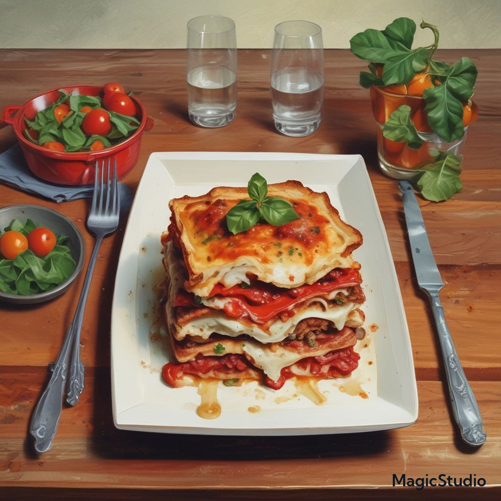

Lasagna

Description
Lasagna is a type of pasta that consists of very wide, flat sheets. It is a popular Italian dish made by stacking layers of lasagna noodles with various fillings such as ragù (a meat and tomato sauce), béchamel sauce, vegetables, and cheeses like ricotta, mozzarella, and Parmesan. The assembled ingredients are then baked in an oven until the cheese on top melts. Once cooked, the lasagna is typically cut into individual square or rectangular portions for serving.
The origins of lasagna can be traced back to Italy during the Middle Ages. The earliest documented mention of lasagna dates back to 1282 in the Memoriali Bolognesi, with the first recorded recipe appearing in the Liber de Coquina in the early 14th century. Over time, lasagna has evolved into different variations based on regional preferences and ingredients available.
Here is one such variation found at allrecipes.com.
Ingredients
- 1 pound Italian sausage
- ¾ pound ground beef
- ½ cup minced onion
- 2 cloves garlic, crushed
- 1 (28 ounce) can crushed tomatoes
- 2 (6.5 ounce) cans canned tomato sauce
- 2 (6 ounce) cans tomato paste
- ½ cup water
- 2 tablespoons white sugar
- 4 tablespoons parsley
- 1 ½ teaspoons basil
- 1 ½ teaspoons salt
- 1 teaspoon Italian seasoning
- ½ teaspoon fennel seeds
- ¼ teaspoon ground black pepper
- 12 lasagna noodles
- 16 ounces ricotta cheese
- 1 egg
- ¾ pound mozzarella cheese
- ¾ cup grated Parmesan cheese
Steps
- Gather all your ingredients
- Cook sausage, ground beef, onion, and garlic in a Dutch oven over medium heat until well browned.
- Stir in crushed tomatoes, tomato sauce, tomato paste, and water. Season with sugar, 2 tablespoons parsley, basil, 1 teaspoon salt, Italian seasoning, fennel seeds, and pepper. Simmer, covered, for about 1 ½ hours, stirring occasionally.
- Bring a large pot of lightly salted water to a boil. Cook lasagna noodles in boiling water for 8 to 10 minutes. Drain noodles, and rinse with cold water.
- In a mixing bowl, combine ricotta cheese with egg, remaining 2 tablespoons parsley, and 1/2 teaspoon salt.
- Preheat the oven to 375 degrees F
- To assemble, spread 1 ½ cups of meat sauce in the bottom of a 9x13-inch baking dish. Arrange 6 noodles lengthwise over meat sauce, overlapping slightly. Spread with 1/2 of the ricotta cheese mixture. Top with 1/3 of the mozzarella cheese slices. Spoon 1 ½ cups meat sauce over mozzarella, and sprinkle with 1/4 cup Parmesan cheese.
- Repeat layers, and top with remaining mozzarella and Parmesan cheese. Cover with foil: to prevent sticking, either spray foil with cooking spray or make sure the foil does not touch the cheese.
- Bake in the preheated oven for 25 minutes. Remove the foil and bake for an additional 25 minutes.
- Rest lasagna for 15 minutes before serving.